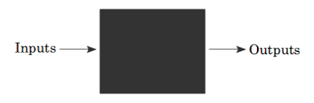

함수
이번 시간에는 프로그래밍의 꽃, 함수에 대해서 알아보자.
함수는 수학시간에 먼저 배우지? 어떤 매개변수를 가지고 있고, 그에 대한 출력값을 가지고 있잖아.
프로그래밍에서도 똑같아. 프로그래밍에서 함수를 쓰는 이유가 뭘까?
함수에 대해서 "블랙박스" 라는 묘사를 종종 들곤 하는데,
어떤 인풋을 넣어주면 그에 대응하는 결과 아웃풋이 나오고, 그 안에서 실질적으로 어떤 일이 일어나는지는 신경쓰지 않아도 된다는 비유이지.
만약 다른 사람이 함수를 잘 만들어준다면? 우리는 그 함수를 가져와 쓰면 되는 것이지. 그저 그 함수가 이런걸 해준다는 것만 알면 되고 그 함수가 내부적으로 어떻게 동작하는지 몰라도 되니까. 굉장한 이점이 있는 것이지.
예를 들면 그 동안 알게 모르게 써오던 input, print 도 함수였어.
그러면 분업이 가능해지는 거니까 아주 효율적이지. 두 번째로 여러번 반복해서 등장하는 코드를 함수로 정의해주면, 등장하는 부분마다 함수를 쓰면 되니까 그만큼 코드가 짧아지고 또 이해가 쉬워지는 거야.
함수의 정의와 호출
파이썬에서 함수는 def 를 이용해서 정의할 수 있어.
# example 1. 함수 정의
# 함수를 만드는 법
def func():
print("함수입니다")
return
# 함수를 호출(Call) 하는 법
func()
def 함수이름(매개변수): 를 이용해 해당 이름의 함수를 만들 수 있고, 인덴트로 해당 함수의 블록을 구분한 뒤 그 함수를 호출하면 어떤 일이 일어나는지를 써주면 돼.
참고로 매개변수는 0개 이상써주면 되는데 위와 같은 함수는 매개변수가 없는 함수 인것이지?
함수이름 뒤에 괄호를 붙여서 해당함수를 호출 할 수 있고, 함수가 호출되면 프로그램의 제어가 해당 부분으로 이동하게 되는 거야.
제어가 함수로 이동한 다음에 return 문을 만나게 되면 함수를 호출했던 부분으로 다시 제어가 돌아오는 원리야.
# example 2. 함수와 제어
def f():
print("함수 f 가 호출됩니다.")
return
def g():
print("함수 g 가 호출됩니다.")
return
f()
g()
f()
위 프로그램을 실행했을 때 제어가 어떤 식으로 이동하는지 한 번 차근차근 알아보자. (설명)
이렇듯 함수를 호출하면 해당부분으로 제어가 이동하게 되는데 return 으로 돌아오면서 어떤 값을 가져올 수 있어.
# example 3. 함수와 반환
def f():
print("함수 f 가 호출됩니다.")
return 1
def g():
print("함수 g 가 호출됩니다.")
return 2
print(f())
print(g())
print(f())
f 함수는 반환값이 1 이고 g 함수는 반환값이 2 이지? 그래서 출력할 때 해당 값들이 출력되는 거야. 함수의 반환값도 엄연한 값이기 때문에 변수에 대입을 할 수도 있지.
그러면 이런 반환값들을 어떻게 활용하는지 보자.
어떤 두 수 x 와 y 의 합을 반환하는 함수를 만들어 볼거야.
# example 3-1. 함수와 반환
deff add_func(x, y):
return x+y
x = 1
y = 2
z = add_func(1, 2)
z 변수에는 1과 2의 합인 3 이 값으로 들어가게 되는 거야.
사실 합은 그냥 z = x+y 라고 하면 되니까 함수가 필요없기는 해. 하지만 이런 경우라면 어떨까?
# example 3-2. 함수와 반환
def f(x):
return x*x+2*x+5
def g(n):
a = 0
for i in range(n+1):
a += f(i)
return a
def h(n):
a = 0
for i in range(n+1):
a += g(i)
return a
print(h(5))
특별히 의미가 있는 코드는 아니고 그냥 예시를 위한 코드야.
f(x) = x*x + 2*x + 5 이고 g(n) = f(0) + f(1) + f(2) + ... + f(n) 이라고 정의하고, 또 h(n) 은
h(n) = g(0) + g(1) + ... + g(n) 이라고 정의 해보자.
문제는 h(5) 의 값을 구하는 거야!
이걸 함수를 쓰지 않고 해결한다면 이중 반복문을 써야 하겠지만, "문제에서 요구하는 대로 함수를 정의" 해서 해결하니까 훨씬 직관적이고 이해가 쉽지?
이렇듯 프로그래밍을 할 때, 함수를 적재적소에 잘 정의한다면 코드가 이해하기 쉬워지고 길이도 짧아질거야.
입력값과 출력값의 개수와 여러가지 모양의 함수들
어떨 때는 입력이 있고, 어떨 떄는 없고, 어떨 떄는 반환값이 있고 어떨 떄는 없고 헷갈리지?
결론 부터 말하면 입력은 0 개이상이고 출력값의 개수는 언제나 하나! 야.
우선 입력이 0개 이상이라는 말은 입력이 없는 함수도 가능하고 매개변수가 아주 많은 함수도 가능하다는 거야. 몇개까지 가능하냐고 ? 구글링결과 직접 선언하는 방식으로 255개 까지 가능하다고 하네 ㄷㄷ
# example 4. 입력값은 0개이상이다.
# 입력값의 개수가 다양한 함수들
def x():
return "hi"
def y(a):
return a
def z(a, b):
return a+b
def v(a, b, c):
return a+ b+c
def w(a, b, c, d):
return a+b+c+d
다음으로 출력값인데, 그냥 return 하면 출력값이 없는거 아니였나고? 아냐 그렇지 않아.
# example 4-1. 출력값은 언제나 하나
def x():
return
a = x()
print(type(a))
print(a)
위 코드의 x 함수의 반환 값은 없는 것 처럼 보이지만 실제로 반환 값 a 의 타입을 보면 None 인 것을 알 수 있어.
None 은 "값이 없다" 라는 걸 표현해주기 위한 타입이야.
이렇듯 뭔가를 반환해주면 그것을 반환하고 반환되는 것이 없으면 None 이 반환되는 것을 볼 수 있어. 출력값은 언제나 하나!
다음으로 디폴트 매개변수에 대해서 알아보자.
# example 5. 디폴트 매개변수
def f(x = 1)
print(x)
f(100)
f()
디폴트 매개변수는 매개변수에 값이 없었을 경우에 디폴트 값을 지정해주는 기능이야.
f 함수에 100 이라는 매개변수가 있으면 100 이 출력되지만 없으니까 1이 출력되지?
사실 디폴트 매개변수는 안써도 지장은 없지만 때로는 매개변수의 수가 많아서 그걸 일일히 쳐주기 귀찮은 경우에 디폴트 옵션 같은 느낌으로 활용할 수 있어.
게임에서도 디폴트 옵션 같은게 있잖아? 함수에서도 비슷한 느낌이라고 할 수 있어.
지역변수와 전역변수
# example 6. 지역변수와 전역변수
def f(a):
a += 1
return a
a = 1
f(a)
print(a)
위 코드를 실행했을 때 a 의 값은 어떻게 될까?
1 이야. 함수에서 a 의 값에 1을 더했지만 실제 a 의 값에는 변화가 없었어.
변수에는 스코프가 존재하는데, 함수안에 있는 a 와 밖에 있는 a 는 이름만 같을 뿐 "전혀 다른 변수" 야.
왜 세상에도 동명이인들이 있잖아? 저 a 도 같은거야. 함수 안에서의 변수와 함수 밖에서으 변수는 서로 구분 돼. 하지만 이런 경우라면 어떨까?
# example 6-1. 지역변수와 전역변수, global
def f():
global a
a += 1
return a
a = 1
f(a)
print(a)
함수 안에서 밖에 있는 변수를 쓰기 위해서는 global 이라는 키워드로 선언을 해줘야 돼. 그러면 함수 안에서 밖에 변수를 사용할 수가 있어.
변수에 범위가 있는 이유는 내가 다른 곳에서 만든 함수를 복붙 해올 수도 있는데, 그 복붙해온 함수에 밖에 있는 변수들이 영향을 받으면 곤란하니까 그런거야.
연습문제
사실 함수만 을 쓰지 않아도 문제를 해결 할 수도 있을 거야. 하지만 프로그램의 구조가 커지고 한 눈에 분석하기 어려워질 경우,
함수를 이용해서 프로그램의 세부적인 동작방식을 블랙박스화 하고, 더 고차원적으로 프로그래밍을 할 수 있기 때문에 함수는 정말 정말 필수야.
그래서 문제는 어떤 행위를 하는 함수를 정의 하는 방식이야.
- 매개변수 x 가 있고, 1+2+...+x 의 합을 반환하는 함수 정의하기
- 매개변수 x 와 y 가 있고, x 를 y 번 출력하는 함수 정의하기
- f(x) = x*x + 3*x +5, g(x) = f(x)*f(x) + f(x) + 1, h(x) = g(x) + g(x-1) 을 만족하는 f, g, h 정의하기
- 매개변수 x 가 있고, 1*2*3*..*x (x 팩토리얼) 을 반환하는 함수 정의하기
- 매개변수 x, y, z가 있고 z 가 1 이면 x+y 를 반환하고 z가 0 이면 x-y z가 그 외의 값이면 x*y 를 반환하는 함수 정의하기
- 매개변수 x 가 있고 구구단 x 단을 출력하는 함수 정의하기
- 위에서 정의한 함수를 이용하여 구구단 2~9 단을 출력하기
- 매개변수 x 가 있고 x 가 소수이면 1 아니면 0 을 반환하는 함수 정의하기